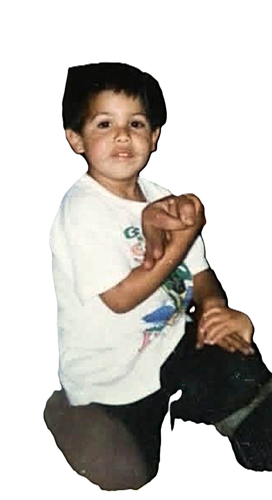
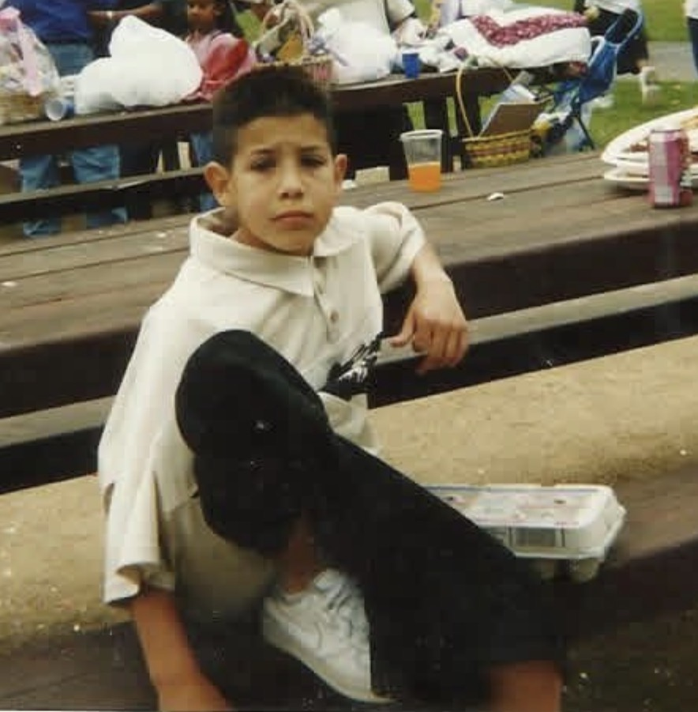

Chapter 1 — The Soil
Galicia, Spain
Before the name Vazquez appeared in any registry, the land that would shape this family already had its character. Galicia — the green, rain-soaked corner of northwestern Spain — is a place of granite coastlines, ancient oak forests, and river valleys so lush they seem painted.
This is Atlantic Spain, not the arid Castile of legend. It is a land of fishermen, farmers, and fighters, where the sea is never far and the mountains rise sudden and steep behind every village.
Vazquez is not simply a surname. It is a record of lineage encoded in language. The name is Galician in origin — a patronymic meaning "son of Vasco," derived from the ancient pre-Roman name Velascus.
The raven: a symbol of intelligence, memory, and the guardianship of the dead. In Iberian mythology, the raven was a messenger between worlds. The family that carries this name has always moved between worlds.
Chapter 2 — The Journey
The Crossing
In the early 1900s, Mexico City was not a place of peace. The Mexican Revolution had fractured the country along lines of land, class, and loyalty.
For urban families in the capital, the threat was economic collapse, conscription, and an uncertain future. Families like the Vazquez family faced an impossible choice: stay and watch everything erode, or leave everything they built and walk north. They chose north.
Grandpa Joe Vazquez made rings. In the tradition of the skilled craftsman, he shaped metal by hand. He understood material. He knew how metal behaved under heat, under pressure, under the intention of a craftsman's eye.
That knowledge — that DNA of precision — traveled with him from Mexico City to the Central Coast of California.
Chapter 3 — The Legacy
From Metal to Concrete
Today, Bear Vazquez runs Bears Concrete Pumping — shaping the foundations of the same California that his grandfather's generation first entered with callused hands and a craftsman's eye.
Grandpa Joe shaped metal. Bear moves concrete. The scale changed. The standard didn't.
The Vazquez family has always known how to move material with intention. From the metalworking shops of Mexico City to the construction sites of the Central Coast — the thread is unbroken.
The family's inheritance isn't money or land. It's the knowledge of how things are built to last. And now Bear is building something else too: a company dedicated to making sure no family loses their story.
Ancestor's Eyes
Bear.
I don't know that we ever talked the way I wanted to. You were young, and I was old, and old men from Mexico City don't always know how to say the things that matter before it's too late. So let me say them now.
I made rings. That was my trade in Mexico City — a platero, a man who works metal. I knew gold and silver the way a farmer knows soil. You press it wrong, it cracks. You rush it, it warps. You give it what it needs — the right heat, the right pressure, the right patience — and it becomes something that lasts a hundred years. I understood that. I built my whole life around that understanding.
What I want you to know is this: what you do with concrete is the same thing. You place foundations. You move material with intention. You know how much weight a pour can hold, how fast it sets in the Central Coast heat, where the tolerances are. You carry the same knowledge I carried — just scaled up from a ring to a building. The precision didn't leave the family when I did. It lives in your hands.
I walked north because Mexico City was running out of future. California was a guess. Your grandfather — your father's father — crossed with craft knowledge and nothing else, and that was enough to build a life. Now you carry it forward, and you carry it right.
Build things that last. Remember where we came from. That's all I ever wanted to pass down.
Then & Now
Every legacy starts somewhere.





Bear Vázquez — Santa Maria, CA — 2026
See the Vázquez family story come to life
Watch the Vázquez Legacy TrailerFamily Tree
Family Timeline
Culture Guide
You carry two bloodlines. Each has its own music, food, archives, and films. Choose a side — or go back and forth. This is yours to explore.
Most people don't know this: Galicia is Celtic. The gaita gallega — the Galician bagpipe — sounds like Ireland because the ancient peoples were connected. Your Vázquez name comes from a place where Celtic music never died. Then that line moved to Mexico City, where the corrido became the working-class newspaper — the music that documented everything the system refused to record. Two sounds. Both in your blood.
Build These Playlists
Listen To — With Context
Carlos Núñez — Galician Bagpipe Master
He blends the gaita with Irish, Breton, and Andean traditions — a perfect mirror of how the Vázquez family crossed worlds. Start with A Irmandade das Estrelas. Note: the Galician word for homesickness is morriña — a longing for a place you may have never been. You'll feel it in this music.
SpotifyLuar na Lubre — Atlantic Celtic Sound
From A Coruña, Galicia — one of the most beloved Celtic folk groups in Spain. Their sound bridges the ancient and modern, exactly as the Vázquez name has always done across continents.
YouTubeMariachi Vargas de Tecalitlán — Mexico City Gold Era
In the Mexico City your grandfather's generation knew — 1930s through 1960s — mariachi was everywhere. At baptisms, at funerals, at the market. This is the music Grandpa Joe grew up hearing before he ever crossed north.
SpotifyThe Mexican Revolution started in 1910 and didn't truly settle until the late 1920s. For a family in Mexico City, California wasn't a dream — it was a calculation. These films show you exactly what that world looked like and why families made the move north.
Watch — In This Order
Macario (1960)
Set in colonial Mexico, made during the exact era your grandfather's generation came of age. Captures the fatalistic beauty of working-class Mexican life. One of the greatest Mexican films ever made. Free on YouTube.
Find on YouTubeMi Familia / My Family (1995)
A Mexican family crosses to Los Angeles and builds a life across three generations. Stars Jimmy Smits, Edward James Olmos. Watch it with your mom.
Find on YouTubeLatino Americans — PBS Documentary (2013)
Six episodes covering 500 years of Latin American history in the US. Episode 3 covers the exact era your grandfather crossed north. Start here for the big picture.
PBS WebsiteRead — One Book
The Death of Artemio Cruz — Carlos Fuentes
The definitive novel of post-Revolutionary Mexico. A dying man reviews his life — land, power, family, compromise. This is the Mexico City your grandfather's generation navigated. If you read one book from this entire guide, make it this one.
AmazonFood is the one thing that crosses every border intact. Put on Week 1's music. Cook one of these dishes. The combination connects something that reading can't reach. Start with the pozole — it's the most Mexico City dish on this list, and it's the easiest to make on a Sunday.
Cook This Week
Pozole Rojo — Mexico City's Celebration Dish
In Mexico City, pozole was the dish for anything that mattered — baptisms, quinceañeras, homecomings. Hominy corn, pork, dried chiles. Grandpa Joe knew this dish. Make it on a Sunday with the mariachi playing.
RecipeTamales — The Food of Crossings
Every family that made the journey from Mexico to California brought tamale knowledge with them. The masa, the filling, the corn husks — it all traveled north. If you have a family tamale recipe, make those. That recipe is worth more than any document in these archives.
GuidePulpo a la Gallega — The Dish of Galicia
Octopus served on wooden plates with olive oil, paprika, and salt. This dish has been eaten at every fair and feast day in Galicia for 700 years. Your Vázquez ancestors — the ones who never left Spain — ate this. Make it once just to say you did.
RecipeTarta de Santiago — Galician Almond Cake
Almond flour, eggs, citrus. Baked in Galicia since the medieval pilgrim era. The cross of Saint James pressed into powdered sugar on top. Simple, ancient, and easy to make. This is the dessert of your family's oldest homeland.
Find on Food52This week you stop reading about your family and start finding them. Birth records. Baptism cards. Border crossing documents. Census pages with their handwriting. Start with FamilySearch — it's free and it's where most people find their first real document.
Search These — In Order
1. FamilySearch — Mexico City Catholic Church Records, 1514–1970
The most likely place to find Grandpa Joe's baptism or his parents' marriage record. Free. No account required to search.
Search: "Vázquez" → Mexico City / Distrito Federal → year range 1890–1930 Open this collection2. PARES — Spanish National Archive
Spain's free national archive. Contains the Padrón de Hidalgos — the nobility registry from the Real Chancillería de Valladolid. Your family's Galician hidalgo status from 1547 is documented in collections like this.
Search: "Vázquez" → Galicia → Real Chancillería de Valladolid collection Open PARES3. NARA — US Border Crossing Records, 1895–1960
The physical card your grandfather filled out when he crossed into California — his handwriting, his described appearance, his stated occupation. This document exists somewhere in here.
Search: "Vázquez" or "Vasquez" → El Paso or Nogales → 1920–1945 Search on Ancestry4. AGN — Archivo General de la Nación (Mexico City)
Mexico's national archive. Land records, colonial padrones, notarial records. The oldest and deepest archive on this list. This is where records from the 1600s and 1700s Mexico City live.
Start: "Ramo Padrones" → Vázquez → Distrito Federal. Use the accent mark in your search. Open AGNThe García family line runs through Nuevo León, Mexico → Sinton, Texas → California. Nuevo León is norteño country — the accordion, the bajo sexto, the corrido. When your family crossed into Texas, that sound mixed with Czech and German polka traditions and became conjunto. Then it became Tejano. Los Alegres de Terán are from General Terán, Nuevo León — the exact region your García/Montemayor line comes from.
Build These Playlists
Listen To — With Context
Selena — Corpus Christi, 30 Miles From Sinton
Selena Quintanilla grew up 30 miles from where your grandmother Elvira García was raised. She crossed every border between Mexican and American identity. Como la Flor, Bidi Bidi Bom Bom, Dreaming of You. This music came out of your family's backyard.
SpotifyFlaco Jiménez — San Antonio Conjunto Legend
The king of Texas conjunto. His accordion style is the direct descendant of what your family heard growing up in Sinton. He worked with Bob Dylan, Ry Cooder, the Rolling Stones — without ever leaving his roots.
SpotifySinton, Texas in the 1930s–1950s: your great-great-grandfather Faustino Montemayor — born 1852, died 1950 at age 98 — lived through more American history than almost anyone. He saw the end of the frontier, both World Wars, the Depression, and the beginning of the civil rights era.
Watch
Selena (1997)
Jennifer Lopez as Selena Quintanilla. Beyond the music — this film captures exactly what it felt like to be Mexican-American in South Texas. Too Mexican for the Americans, too American for the Mexicans. Your family navigated that same identity their entire lives.
Find on YouTubeLone Star (1996)
Set in a South Texas border town. A mystery about family secrets, racial identity, and what gets passed down across generations. The landscape is your family's landscape.
Find on YouTubeSinton, Texas border cooking is its own tradition — not pure Mexican, not Tex-Mex as tourists know it. It's ranch food, farmworker food, family food cooked in a wood-heated kitchen by a woman with 18 children to feed. Start with caldo de res. It's the simplest and closest to what Clara Montemayor would have made.
Cook This Week
Caldo de Res — South Texas Beef Soup
Beef, corn, chayote, carrots, cilantro. A pot of this fed a whole ranch family on a cold Texas morning. Clara Montemayor fed 18 children. This is the kind of dish that sustained them.
YouTubeBarbacoa — The Celebration Meat
In South Texas, barbacoa on Sunday morning is sacred. Slow-cooked beef cheek wrapped in maguey leaves. The dish your grandmother's family made when there was something to celebrate — or just because it was Sunday.
RecipeThe García/Montemayor line has a real head start: Faustino Montemayor — born 1852, died 1950 — spans so much history that multiple census records almost certainly exist. The 1930 and 1940 US Census records for Sinton, Texas are the place to start. He's in there.
Search These
1. FamilySearch — Texas Census Records
Search for Faustino Montemayor in San Patricio County, Texas. The 1940 census record showing him with Clara and their 18 children is likely findable here.
Search: "Montemayor" → San Patricio County, Texas → 1930–1940 FamilySearch2. Texas Birth & Death Records — TDSHS
Texas Department of State Health Services holds birth and death records from 1903 onward. Elvira "Barbara" García born Sept 7, 1944 in Sinton — her birth certificate is searchable here.
Search: García → San Patricio County → 1944 Texas DSHS3. Nuevo León Church Records — FamilySearch
The Montemayor name originates in Nuevo León. Catholic baptism records from General Terán and surrounding municipalities go back to the 1700s.
Search: "Montemayor" → Nuevo León → General Terán → pre-1900 Open this collectionBear's Work
My Legacy Playlist
Bear's World
Bears Concrete Pumping
No middleman. Real work on the Central Coast. Before and after portfolio, tap-to-call, the full story.
Butters
Orange tabby. 5 years old. Microchipped. Professional napper. The Champ of Santa Maria.
Profile Gallery
Heritage books, memorials, pet profiles, business pages — browse every profile type we build.
Rescue Registry
Every rescue dog gets a permanent profile. Free.
We support local rescue partners in our community. Every dog that comes through Underdog Heroes gets their own permanent profile — so their story lives on even after they're adopted.
View the RegistryPermanent Profiles